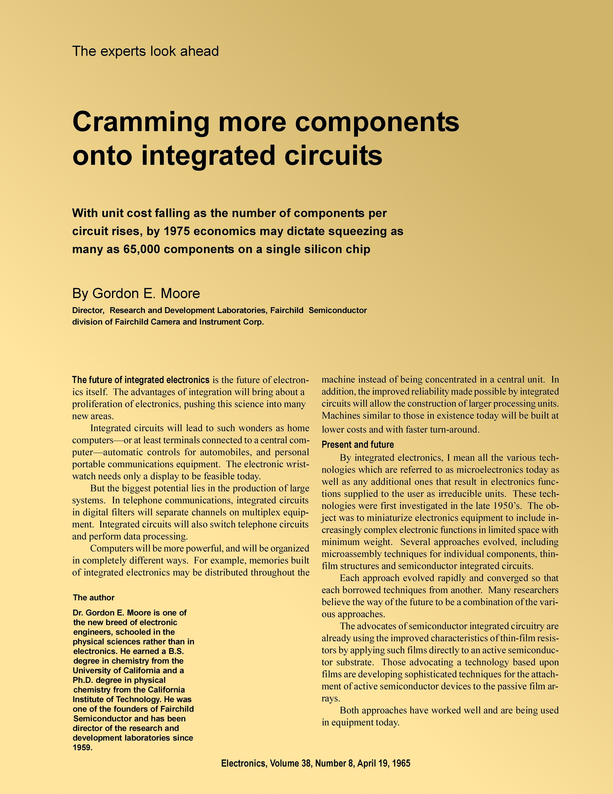

Gordon Moore(*1929) Mitbegründer von Intel

1965 hat Gordon Moore eine Regel zur vorraussichtlichen Entwicklung von Prozessoren in der Zeitschrift Society veröffentlicht
Er behauptete, dass die günstigsten Prozessoren immer doppelt so viele Komponenten haben, wie der günstigste Prozessor vor ein bis zwei Jahren
Heutzutage ist allerdings umstritten, ob die Regel noch Geltung hat
2005 hat das Heinz Nixdorf Museums Forum eine Chip-Pagode zum 40. Geburtstag des mooreschen Gesetzes aufgestellt

- 1965: erste Veröffentlichung der Regel von Gordon Moore in der Zeitschrift „Electronics“, damals hieß es noch die Komponenten würden sich jährlich verdoppeln
- 1970: Carver Meadbenutzt als Erster den Begriff „mooresches Gesetz“
- 1975: Gordon Moore korrigiert die Verdopelung auf alle zwei Jahre
- 2007: Gordon Moore sagt Ende des Gesetzes voraus
- 2008: Pat Gelsinger, der Chef von Intel, sagt Gültigkeit des Gesetzes bis 2029 voraus
- Das Gesetz ist nur eine Faustregel
- Es gibt unterschiedliche Formulierungen des Gesetzes:
- Manche meinen, dass es sich jedes Jahr verdoppelt
- Manche meinen, dass es sich alle 16 Monate verdoppelt
- Manche meinen, dass es sich alle zwei Jahre verdoppelt
- Manche meinen, dass das, was sich verdoppelt, die Transistoranzahl(manchmal auch pro Flächeneinheit) ist
- Quelle: Wikipedia